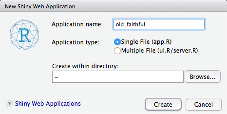
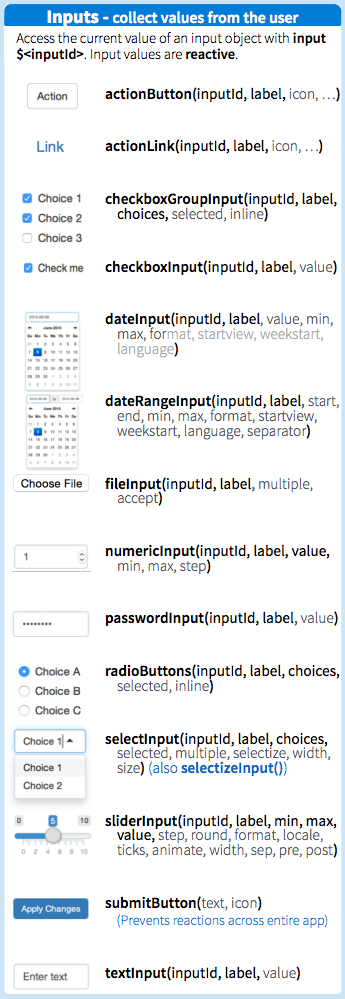
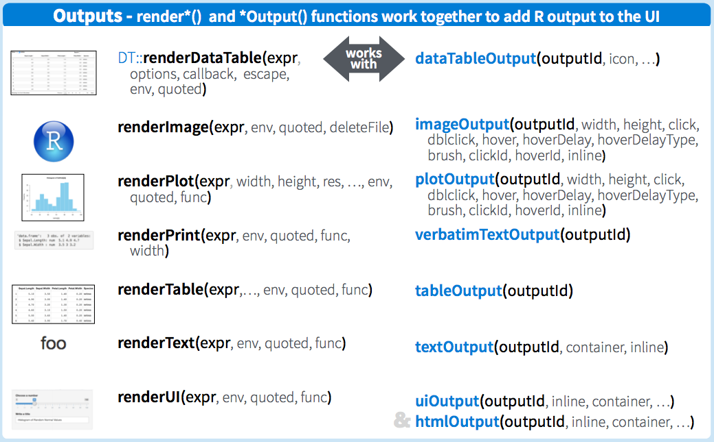

An Introduction to Shiny

Julia Silge
install.packages(c("shiny",
"dplyr",
"ggplot2",
"DT"
"devtools"))
devtools::install_github("juliasilge/southafricastats")


Reactivity occurs when an input value is used to render an output object
selectInput(inputId = "province",
label = "Province:",
choices = unique(mortality$province),
selected = "Gauteng")Reactivity occurs when an input value is used to render an output object
# calculations behind the scenes
server <- function(input, output) {
output$mortalityPlot <- renderPlot({
mortality %>%
filter(province == input$province) %>%
ggplot(aes(year, deaths, color = indicator)) +
geom_line(alpha = 0.8, size = 1.5) +
theme_minimal(base_size = 18)
})
}Reactivity occurs when an input value is used to render an output object
We can select more than one thing at a time
selectInput(inputId = "province",
label = "Province:",
choices = unique(mortality$province),
selected = "Gauteng",
multiple = TRUE)We can select more than one thing at a time
# calculations behind the scenes
server <- function(input, output) {
output$mortalityPlot <- renderPlot({
mortality %>%
filter(province %in% input$province) %>%
ggplot(aes(year, deaths, color = indicator)) +
geom_line(alpha = 0.8, size = 1.5) +
facet_wrap(~province, scales = "free") +
theme_minimal(base_size = 18)
})
}checkboxInput(inputId = "show_data",
label = "Show table?",
value = FALSE)output$mortalityTable <- renderDataTable({
if(input$show_data){
DT::datatable(data = selected_df())
}
})app.R)